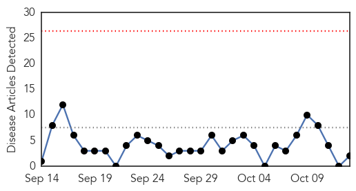

Influenza
30-Day Web Trend
4 alerts, 15 warnings

30-Day Twitter Trend
2 alerts, 0 warnings

Article Locations

Article Confidences

Top Articles:
Top Tweets:
- 0.706
- .@DavidQuammen on Ebola & other EIDs; @CDC_EIDjournal on oseltamivir-resistant influenza. HealthSecurity http://t.co/H1JhGDbj22
Cholera
30-Day Web Trend
0 alerts, 0 warnings

30-Day Twitter Trend
0 alerts, 0 warnings

Article Locations
Article Confidences

Top Articles:
Top Tweets:
- 0.590
- RT: 230 patients tested positive for cholera in Yangon Myanmar: http://t.co/VIhFKMPAXF